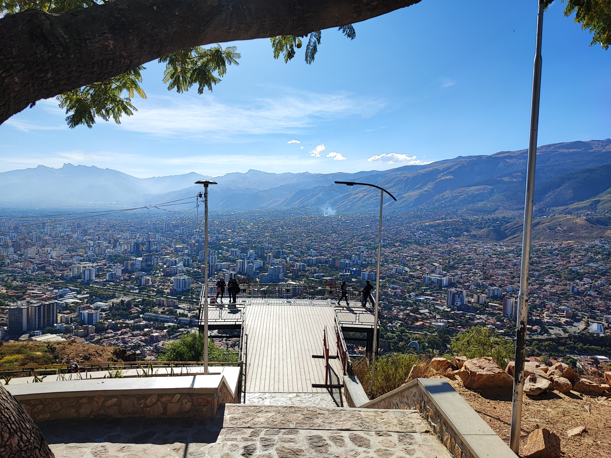
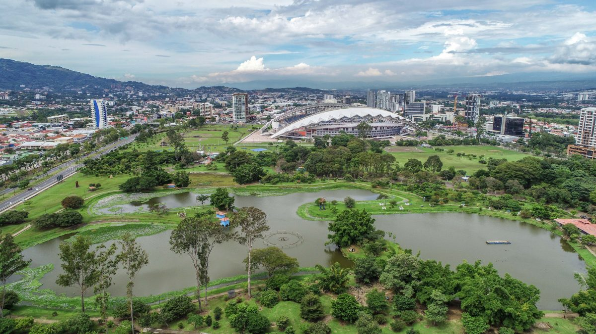

Paisajes naturales
Montañas, bosques y senderos. También contamos con miradores que rodean la ciudad.



Valiandar es una ciudad ubicada entre valles verdes y una cadena de montañas conocida como la Cordillera De Bardegar, llamada asi por un antiguo pueblo originario. La ciudad es reconocida por combinar arquitectura histórica, espacios naturales y por su interesante cultural.
Fundada hace más de 250 años por Eduardo Manuel Vastidar, Valiandar creció alrededor del Río Vandal, que atraviesa la ciudad de oeste a este y divide sus principales zonas. Sus calles mezclan edificios rusticos de gran detalle con construcciones modernas en el centro de la ciudad al estilo NewYork. Cuenta con grandes plazas, parques y zonas comerciales.
Muchos reconocen a nuetra ciudad por su popular apodo “La Joya ”, debido a que en las montañas se encontró una gran mina de diamantes.
Montañas, bosques y senderos. También contamos con miradores que rodean la ciudad.
El centro histórico conserva edificios construidos hace más de dos siglos.
Durante todo el año se realizan festivales de música, arte, gastronomía y tradiciones locales.
Senderismo, ciclismo, paseos en bote y excursiones son algunas de las actividades favoritas.
Valiandar posee platos propios elaborados con productos de la región.
18 al 22 de enero: En el centro de la ciudad, por la noche, se abre un espectáculo de luces acompañado de buena música local. Un evento muy concurrido por los turistas ya que múltiples locales de la zona abren sus puertas. Sin duda un buen momento para sacar fotos y pasar el rato en familia.
15 al 22 de febrero: Una semana dedicada a la cultura de nuestra ciudad, donde distintos artistas locales presentan sus obras y actividades. También podés encontrarte con entradas gratuitas al teatro de la ciudad.
22 al 28 de febrero: Muchos de los restaurantes se suman a una competencia para decidir quién hace las mejores pizzas de la ciudad. Sé uno de los afortunados y disfrutá de los distintos restaurantes que tenemos para ofrecerte.